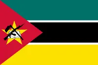

About Me
My name is Armindo Armando Mazivila. I was born in Mozambique in Magude district. I have two brothers. My mother moved to Maputo City while I was still a child and raised us in difficult circumstances. I have a passion for technology and web development. I am currently enrolled in the WDD 131 Dynamic Web Fundamentals course to improve my skills and knowledge in web development. My goal is to become a proficient web developer and contribute to innovative projects in the technology industry.
Maputo, Mozambique

Mozambique is a country in southeastern Africa. It is known for its beautiful coastline and rich cultural heritage. One thing I like about my country is that we are very friendly and welcoming people. Mozambique has a diverse culture with many different languages and traditions. The country is also known for its beautiful beaches, wildlife, and natural resources.